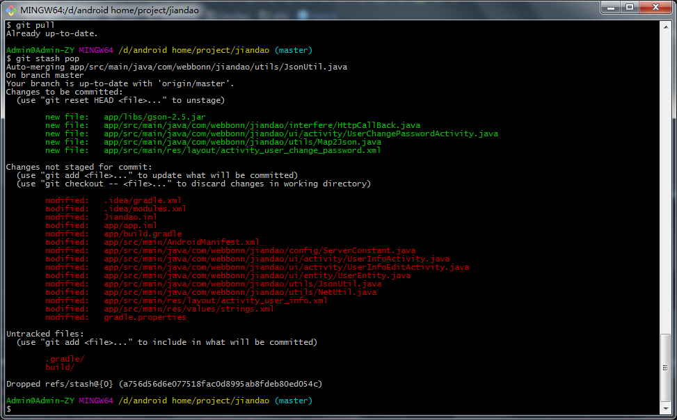

changes would overwritten by merge
现象：git pull出错：
xxxMacBook-Pro:xxx minglong$ git pull
Username for ‘http://git.oschina.net’: xxx@qq.com
Password for ‘http://xxx@qq.com@git.oschina.net’:
remote: Counting objects: 25, done.
remote: Compressing objects: 100% (25/25), done.
remote: Total 25 (delta 15), reused 0 (delta 0)
Unpacking objects: 100% (25/25), done.
From http://git.oschina.net/xxx/xxx
dec7330..c99180f master -> origin/master
f0edd68..c99180f remote_push -> origin/remote_push
* [new tag] remote_push -> remote_push
Updating dec7330..c99180f
error: Your local changes to the following files would be overwritten by merge:
JianDao/JianDao/Constants.swift
Please, commit your changes or stash them before you can merge.
Aborting
原因：本地有更新，但是没提交。而pull下载并合并，会把本地改动覆盖掉。
解决办法：把本地的暂存起来，再去pull更新并合并，再把暂存的恢复出来。
操作步骤：
git stash
git pull
git stash pop
补充：
另外也遇到一个类似情况，但是处理方式是：
扔掉另外2个冲突的，但是无用的文件：
git checkout — file_you_want_throw_away
再去git stash pop即可：
